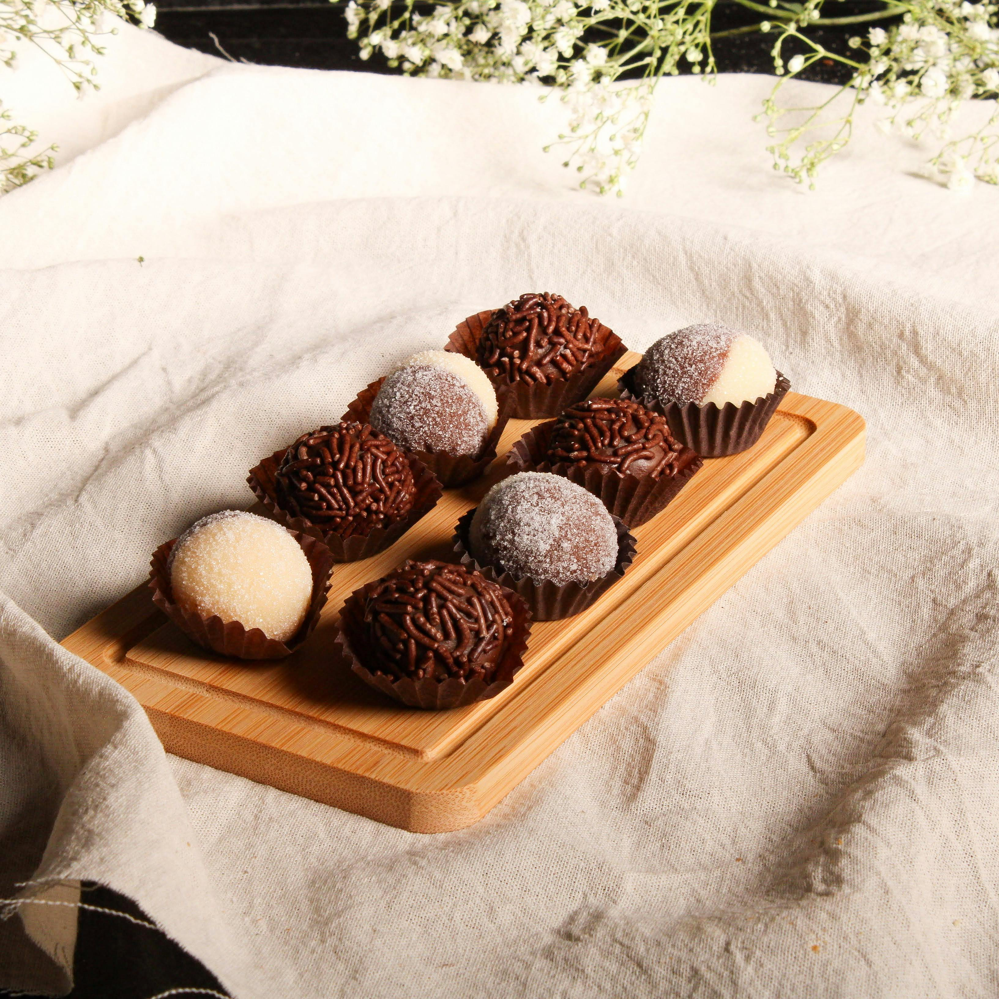

Brigadeiro

Description
Brigadeiro is the quintessential Brazilian party sweet, a simple yet irresistible fudge truffle made with just a few ingredients. Its rich, chocolatey flavor and melt-in-your-mouth texture make it a universal favorite.
Ingredients
- 1 can (14 oz) sweetened condensed milk
- 2 tablespoons cocoa powder, sifted
- 1 tablespoon unsalted butter, plus more for rolling
- Chocolate sprinkles
Steps
- In a small saucepan over medium heat, combine the condensed milk, cocoa powder, and butter.
- Cook, stirring constantly with a wooden spoon, for about 10-15 minutes until the mixture thickens and pulls away from the bottom of the pan.
- Pour onto a greased plate and let it cool completely.
- Once cool, grease your hands with a little butter, roll the mixture into small balls, and coat them generously in chocolate sprinkles.
See more recipes on the home page